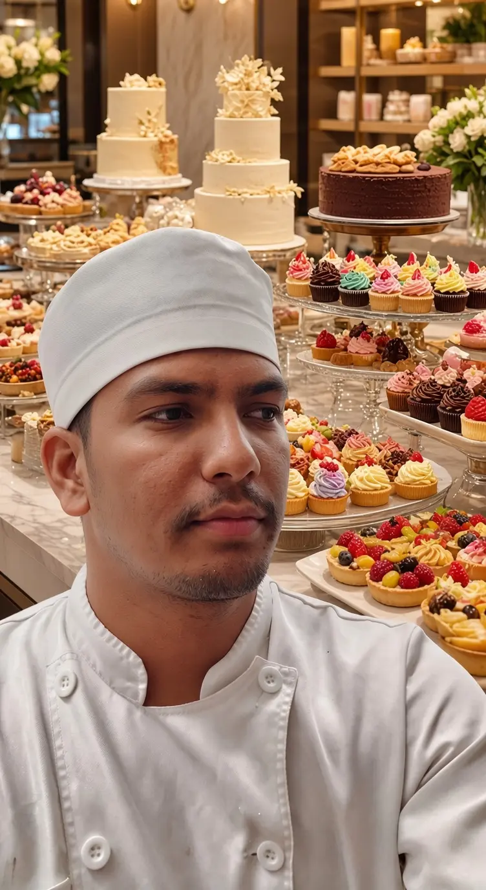
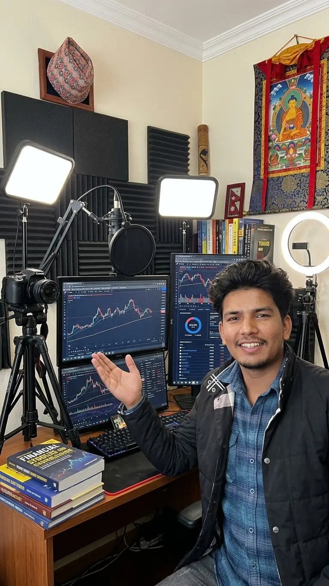
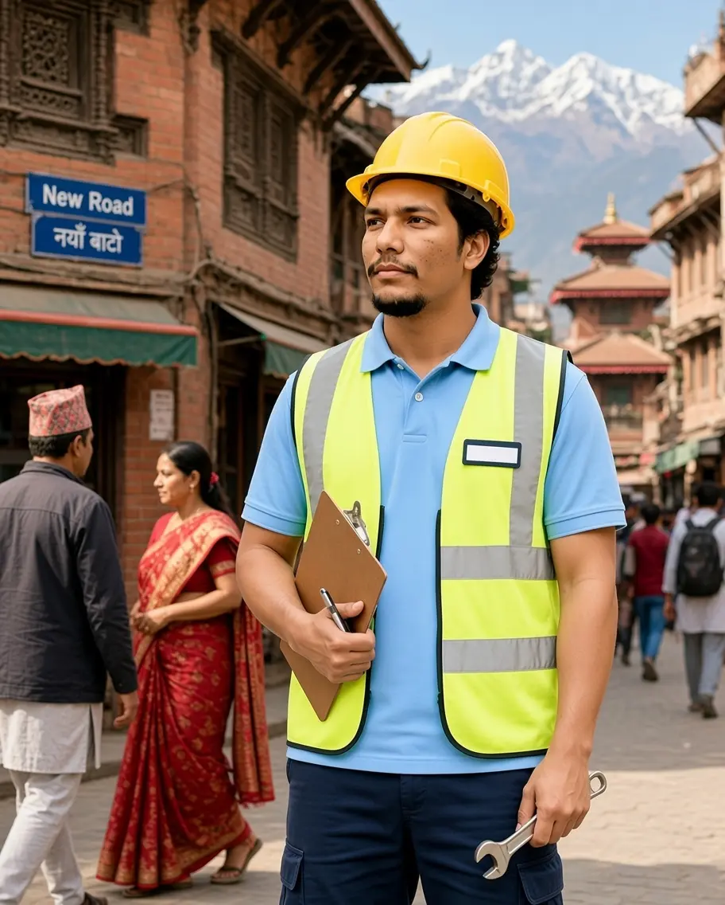

Current · Main profession
Pastry Chef
Preparing, finishing and presenting restaurant desserts with close attention to consistency, timing, hygiene and detail.
I bring together pastry craft and digital creativity in Portugal, supported by a practical background in civil engineering.

A multidisciplinary professional from Nepal, based in Portugal, combining hands-on pastry work with content creation and web design.
My professional journey has taken me through kitchens and hospitality teams in Poland and Portugal. Today, pastry remains my main craft—where precision, timing and presentation matter every day.
Alongside my pastry work, I create digital content and develop websites. My Diploma in Civil Engineering from Seti Technical School in Doti, Nepal, adds technical thinking and structured problem-solving to everything I do.
One main profession, one growing digital practice, and one technical foundation.
Preparing, finishing and presenting restaurant desserts with close attention to consistency, timing, hygiene and detail.

Creating digital content and building clean, practical websites while continuing to grow creative and technical skills.

Diploma-trained in civil engineering, with a foundation in technical drawing, practical planning and structured problem-solving.
A career built through practical kitchen work, guest service and growing specialization in pastry.
Preparing and presenting desserts in a professional restaurant setting, with attention to consistency, timing, hygiene and finish.
Creating digital content and developing clear, responsive website experiences while building a growing digital portfolio.
Welcomed guests, explained menu items and ingredients, supported allergy-related questions and communicated daily promotions.
Prepared ingredients, supported deliveries, maintained kitchen tools and work areas, and helped the team keep service organised.
Precision from the kitchen, creativity from content work and structured thinking from a technical education.
Careful preparation, consistent finishing and thoughtful presentation of restaurant desserts.
Planning and creating digital content with a clear message and strong visual presentation.
Developing clean, responsive and easy-to-use websites with attention to structure and detail.
Open to professional opportunities, creative projects and meaningful collaborations.